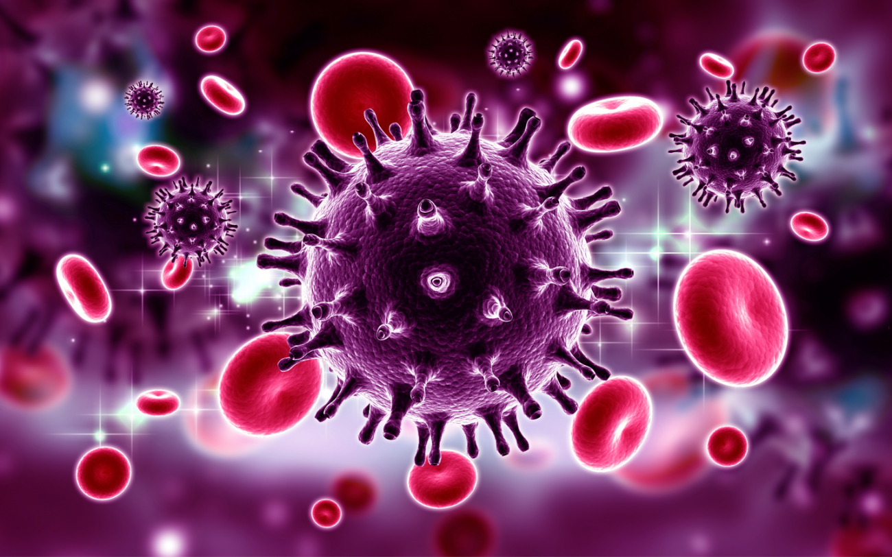

Bacterias: Son organismos procariotas unicelulares. Son abundantes en diversos ambientes y pueden tener formas y tamaños variados. Algunas bacterias son beneficiosas, como las que ayudan en la descomposición de materia orgánica y la producción de alimentos, mientras que otras pueden ser patógenas y causar enfermedades.

Virus: Son partículas infecciosas que consisten en material genético (ADN o ARN) envuelto en una cápsula proteica. Los virus no son células vivas y requieren de una célula huésped para reproducirse. Pueden infectar a organismos de todos los reinos, incluyendo animales, plantas y bacterias. Algunos virus son responsables de enfermedades humanas, como el resfriado común, la gripe, el VIH, entre otros.

Hongos: Son organismos eucariotas que pueden ser unicelulares (levaduras) o multicelulares (mohos y setas). Los hongos se encuentran en una variedad de hábitats y pueden ser beneficiosos o perjudiciales. Algunos hongos son utilizados en la producción de alimentos (por ejemplo, levadura en la fermentación del pan y la cerveza), mientras que otros pueden causar infecciones en humanos, como la candidiasis.
Protozoos: Son organismos eucariotas unicelulares que se encuentran principalmente en ambientes acuáticos. Los protozoos se mueven utilizando estructuras como flagelos o pseudópodos y pueden ser parásitos o de vida libre. Algunos protozoos parásitos pueden causar enfermedades como la malaria, la enfermedad del sueño y la toxoplasmosis.

Algas: Son organismos eucariotas fotosintéticos, en su mayoría acuáticos. Aunque algunas algas son microscópicas, otras pueden ser macroscópicas, como las algas marinas. Las algas son importantes para el equilibrio ecológico y la producción de oxígeno, además de ser utilizadas en la industria alimentaria y farmacéutica.
Estos son solo algunos ejemplos de los principales tipos de microorganismos. Dentro de cada grupo, hay una gran diversidad de especies y variedades con características únicas y funciones específicas. Los microorganismos desempeñan un papel crucial en los ecosistemas y tienen impactos significativos en la salud humana, la agricultura, la industria y otros ámbitos de la vida.